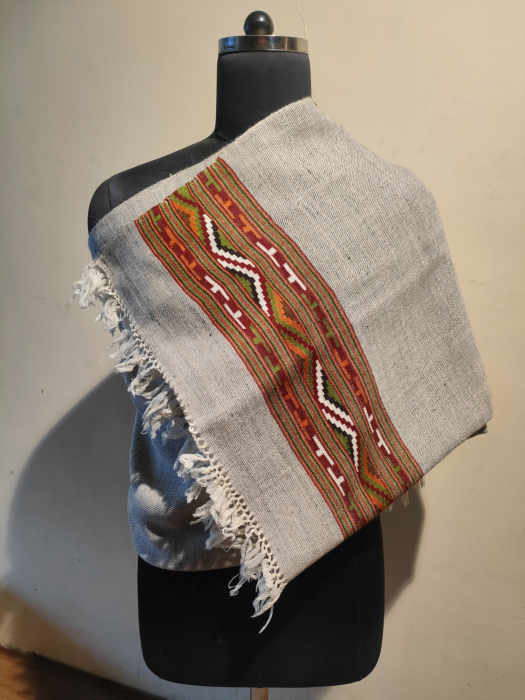

An eminent geographical indication, Kullu shawls find their home in the state of Himachal Pradesh.
The Kullu shawl is a type of shawl made in Kullu, India, and is known for its bright colors and geometrical patterns. The indigenous Kulivi people originally wove plain shawls. However, the trend of more patterned shawls began in the early 1940s when craftspeople from Bushahr arrived. The shawls became prominent after a craftsman from Himachal Pradesh introduced artistic patterns and floral art.
Kullu shawls can be woven using both the throw-shuttle and the fly-shuttle technique, with the latter producing more uniform fabric at a faster speed. The fly shuttle is first fixed with the required weft yarn before being passed through the warp using the twill-weaving process.
